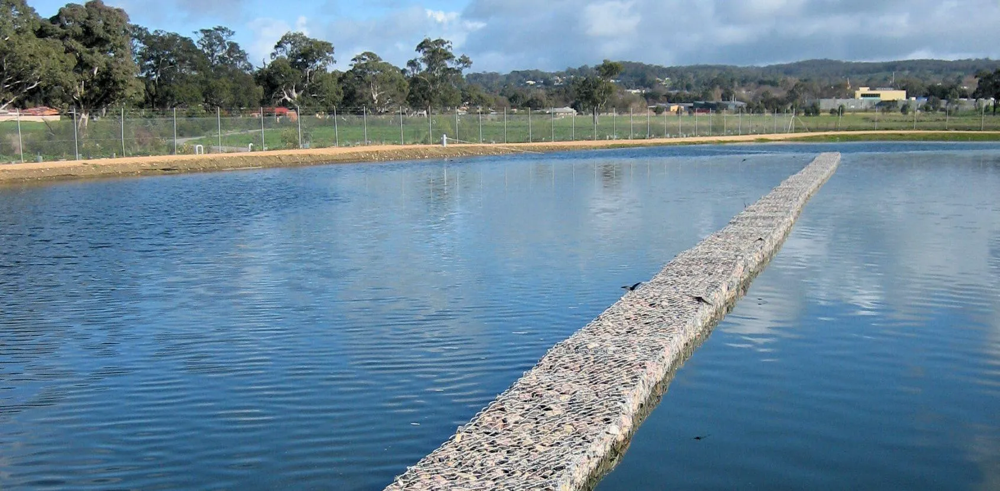
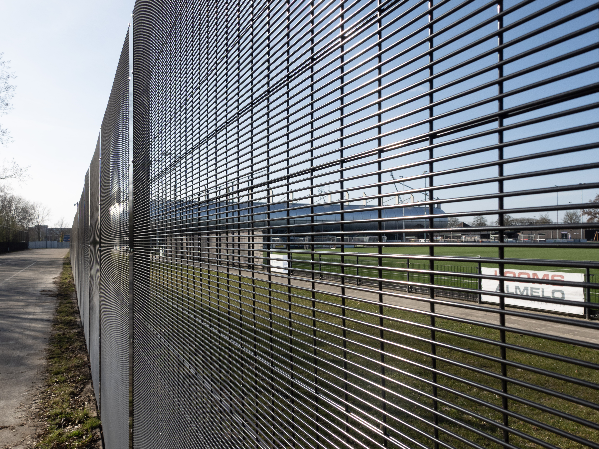
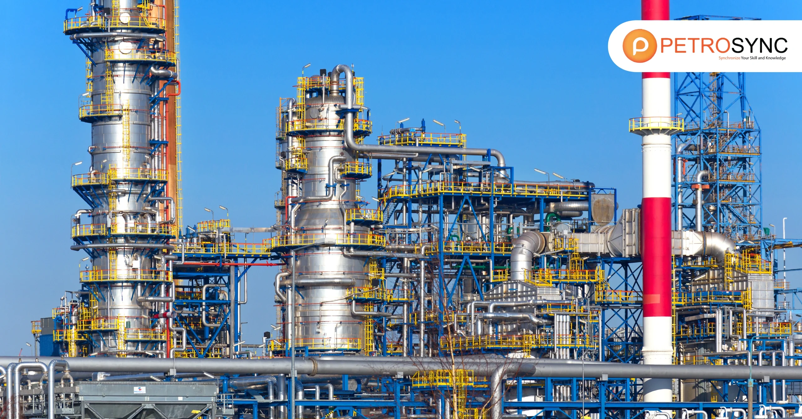

Case Studies
Explore how KESTREL METAL wire mesh and fencing solutions are engineered for real-world challenges across industries.

Gabion System Enhances Wastewater Treatment
Four freestanding gabion walls acting as submerged baffles in a wastewater treatment lagoon upgrade, providing a durable and cost-effective solution for improved treatment efficiency.
View Case Study →
Gabion Embankment Strengthens Flood Defence in Roma
162 gabion baskets and 334 rock mattresses supplied for a Stage 2 flood levee project, protecting 51 additional properties from above-floor flooding.
View Case Study →
Mining Operation Vibrating Screen Replacement
Custom-manufactured wedge wire screens and heavy-duty welded mesh panels for a copper mining operation, improving screening efficiency by 35% and extending service life.
View Case Study →
Highway Safety Barrier Installation Project
Supply and installation of 3D wire panel fencing and razor wire topping for a 200km highway safety upgrade, meeting AASHTO crash test standards.
View Case Study →
Solar Farm Perimeter Security System
Chain link fencing with PVC coating for a 500MW solar farm, including anti-climb barriers, vehicle access gates, and wildlife exclusion across 800 acres.
View Case Study →
Large-Scale Cattle Ranch Fencing Project
Complete fencing solution for a 10,000-acre cattle ranch in Australia, featuring hinge joint field fence, barb arms, and custom gates built for extreme weather.
View Case Study →
Petrochemical Plant Security Enclosure
High-security fencing for a petrochemical refinery, including welded mesh panels and blast-resistant perimeter barriers meeting ISA security standards.
View Case Study →
Luxury Residential Community Fencing
Decorative powder-coated welded mesh panels, automated gates, and landscape-integrated design for a premium 2,000+ home residential development.
View Case Study →Have a Project in Mind?
Our engineering team can design a fencing or mesh solution tailored to your specific application, environment, and requirements.